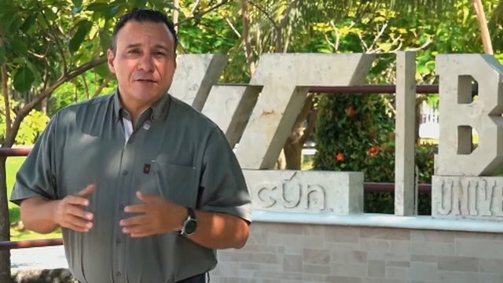
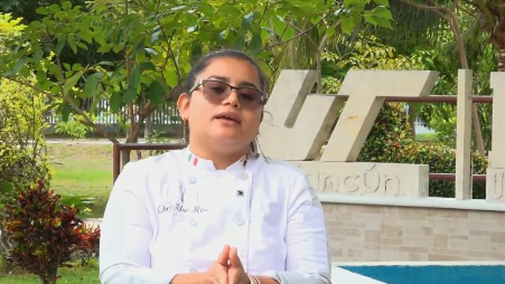

¡Conoce a Edgar Ulises Hernández Cruz, egresado de la Licenciatura en Gestión y Desarrollo Turístico
Empresas vinculadas · UT Cancún
¿Ya conoces las empresas vinculadas con la universidad?
Son las empresas en las que puedes hacer tu estadía. Búscalas por nombre, giro, ubicación o división afín.
Conócelas aquí0empresas vinculadas
0giros comerciales
Departamento de Gestión Empresarial
Tu camino a la vida profesional comienza aquí.
Te acompañamos en tu estadía profesional, te conectamos con empresas vinculadas y compartimos vacantes para estudiantes y egresados. Todo lo que necesitas consultar, en un solo lugar.
Enero – Abril 2027
Tu ruta en 10 pasos
Periodo oficial de estadías
7 ene 2027 · inicia16 abr 2027 · termina
Qué encuentras aquí
Elige por dónde empezar
Estadías
Qué es, modalidades, fechas del periodo y la agenda de actividades para descargar.
Ver la rutaBolsa de trabajo
Vacantes disponibles para estudiantes y egresados, y atención a tu caso particular.
Ver vacantesSeguimiento de egresados
Actualiza tus datos, responde las encuestas y conoce historias de egresados.
Ir a egresadosEmpresas vinculadas
883 empresas con convenio. Filtra por giro, ubicación y división.
Buscar empresaContáctanos
Correos, extensiones y canales de WhatsApp y Facebook para recibir avisos.
Ver contactos
¿Dónde encontrarnos?
Gestión Empresarial está en el Edificio D
- Horario
- Lunes a viernes, 8:00 a 18:00 h
- Teléfono
- (998) 881-1900, ext. 1319 y 1141
- Estadía profesional, UT Cancún
Estadía profesional · Enero – Abril 2027
Aquí empieza tu viaje en la vida profesional.
La estadía es tu práctica profesional: aplicas lo que aprendiste en el aula dentro de una empresa o dependencia real. Es el último paso antes de egresar, y no lo haces solo.
480 hen total (licenciatura e ingeniería). TSU: 600 h
8 hjornada máxima diaria
7 eneinicia tu estadía
16 abrtermina tu estadía
Agenda de Actividades de Estadía Profesional
Los 10 pasos obligatorios, fechas, casos especiales y checklist del periodo enero–abril 2027.
Elige tu modalidad
Tres formas de hacer tu estadía
01
Estadía ordinaria
En una empresa vinculada con convenio de colaboración con la UT Cancún.
02
Movilidad nacional o internacional
En una empresa de otro estado o de otro país. Tiene requisitos y fechas propias.
03
Proyecto de investigación
Incluye el Programa Delfín. Consulta los detalles con tu dirección de carrera.
Tu calendario
La ruta, paso a paso
Marcamos en verde lo que ya pasó y resaltamos el paso que sigue según la fecha de hoy.
Si omites alguna de estas actividades, se registrará una sanción en tu expediente.
Tu seguimiento
¿Ya cumpliste con todo?
Marca cada actividad conforme la completes. Se guarda solo en este navegador.
0 de 11
Formatos
Lo que vas a necesitar
¿Puedes exentar la memoria?
Tres casos en los que aplica
Aun si exentas la memoria, debes cumplir todas las actividades de la agenda.
Certificación
Verifica si aplica en tu división.
Excelencia académica
Calificación mínima de 9.0.
Experiencia laboral
Mínimo 2 años y cubrir los requisitos.
Casos especiales
Si tu estadía no es la ordinaria
¿Necesitas cambiar de empresa?
- Solo se permite 1 cambio, con fecha límite el 18 de enero.
- La nueva empresa debe estar vinculada y tus horas inician desde cero.
- Registra los nuevos datos y entrega la carta de presentación firmada y sellada por la nueva empresa (repite los pasos 3, 4 y 5).
- Fuera de fecha, Gestión Empresarial evalúa tus motivos y tu dirección de carrera emite el memorándum.
¿Harás tu estadía en otro estado? (Movilidad Nacional)
Aplica cuando te quedas a residir en la ciudad donde está la empresa.
- Antes de iniciar: verifica que la empresa tenga convenio; si no, tramítalo.
- Antes de iniciar: llena la Solicitud de Movilidad Nacional y entrégala en Gestión Empresarial a más tardar el 18 de enero.
- Por correo: envía tu carta de presentación cuando la empresa la firme y selle.
- Al finalizar: entrega en persona tu carta de presentación original, carta de liberación (con copias de ambas) y 2 fotos tamaño infantil.
¿Te vas de Movilidad Internacional?
- Verifica que Movilidad Internacional envíe a Gestión Empresarial el memorándum de aviso de inicio (con tus datos, lugar y periodo).
- Realiza los pasos 1, 4 y 7.
- Verifica que la Subdirección de Proyectos de Vinculación e Internacionalización (internacional@utcancun.edu.mx) envíe el memorándum de finalización.
- Al regresar, entrega en persona ese memorándum y 2 fotos tamaño infantil. Tienes 10 días hábiles después de tu llegada a Cancún.
Requisitos de las 2 fotos tamaño infantil
- Blanco y negro, papel mate autoadherible, con retoque y fondo blanco.
- Cara descubierta, camisa o blusa blanca y saco gris claro.
- Al reverso de ambas: nombre, matrícula y carrera.
¿A quién acudo?
Evita vueltas
Identifica si tu trámite es académico o de Gestión Empresarial.
Académico
Tu dirección de carrera o división
- Asignación de asesor académico
- Evaluación académica
- Cédula de aprobación de memoria
- Registro de tema de memoria
- Modalidad de estadía profesional
Gestión Empresarial
Edificio D
- Elegir empresa vinculada
- Entrega de carta de presentación
- Registro de la estadía profesional
- Entrega de la carta de liberación
- Algún percance con tu asesor empresarial o empresa
Bolsa de trabajo
Tu siguiente oportunidad puede estar aquí.
Vacantes compartidas por empresas para estudiantes y egresados de la UT Cancún. Revisa los requisitos de cada una y postúlate por correo.
¿Tienes un caso particular?
Si buscas orientación sobre una vacante, tu CV o tu seguimiento como egresado, escríbenos y te atendemos de forma personal.
¿Dónde encontrarnos?
Bolsa de trabajo, en Gestión Empresarial
- Ubicación
- Edificio D, Departamento de Gestión Empresarial
- Horario
- Lunes a viernes, 8:00 a 16:00 h
- Teléfono
- (998) 881-1900, ext. 1151
- Bolsa de Trabajo, UT Cancún
Empresas vinculadas · actualizado al 6 de julio de 2026
Encuentra la empresa para tu estadía.
Solo puedes hacer tu estadía en las empresas de esta lista. Antes de elegir, verifica que el área donde estarás tenga relación con tu carrera.
¿La empresa que quieres no está vinculada?
Conoce el proceso para solicitar el convenio.
La división afín y la ubicación son una guía calculada a partir del nombre y la actividad comercial de cada empresa. Confirma con tu dirección de carrera que el área se relacione con tu carrera. Si la empresa de tu registro no aparece, aún no concluye su proceso de vinculación.
Vinculación de empresas nuevas
¿Tu empresa no tiene convenio? Así se tramita.
Consigue los datos de Recursos Humanos de la empresa y captura la solicitud. Nosotros nos encargamos del contacto y del convenio.
26 oct – 13 nov 2026Periodo de solicitud de vinculación de empresas nuevas
- 1
Capturas los datos de la empresaEn la Solicitud de Vinculación Empresarial
- 2
Gestión Empresarial la contactaLe enviamos por correo los requisitos
- 3
La empresa envía documentos a JurídicoTiene 5 días hábiles
- 4
Jurídico elabora el convenio
- 5
Firma la empresaApoderado legal y testigo, en 5 días hábiles
- 6
3 juegos impresos y firmas de la UT
- 7
Se notifica a la empresa la entrega del convenio
Si la empresa no firma el convenio en 5 días hábiles después de elaborado, deberás elegir una empresa de la lista de vinculadas.
Seguimiento de egresados
Egresas, pero sigues siendo parte de la UT.
Mantén tus datos actualizados, responde las encuestas institucionales y conoce las historias de egresadas y egresados de la UT Cancún.
Tus datos
Registro y actualización de datos
Con tus datos al día podemos contactarte, compartirte vacantes y darte seguimiento.
Tu opinión cuenta
Encuestas de satisfacción
Encuesta de Satisfacción de Egresados (as) TSUTécnico Superior Universitario
Encuesta de Satisfacción de Egresados (as) de Licenciaturas e IngenieríasLicenciatura e Ingeniería
Encuesta de Satisfacción del Servicio de Seguimiento de Egresados y Apoyo de Bolsa de TrabajoSobre la atención que recibiste
Egresados de éxito
Historias que inspiran
¡Conoce a Rocío Arceo, egresada de la generación 97-99 del TSU en informática!
¡Conoce a Nayeli Vargas, egresada de la Licenciatura en Gestión y desarrollo turístico!

FacebookAriel Valtierra, Director Técnico en la Secretaría de Turismo de Quintana Roo
“Para mí, la UT son los cimientos de lo que ha sido mi vida profesional”

FacebookMar Ríos, Chef Ejecutiva del Centro Comunitario Integral para las Juventudes
Nunca dejen de luchar por sus sueños: el consejo de nuestra egresada
Isaac Rodríguez Flores, Coordinador de Vinculación Interinstitucional y con Organizaciones no Gubernamentales para la CDHEQROO
De la UT Cancún al servicio de la comunidad
Mantente en contacto
Síguenos y entérate primero
¿Eres egresado y necesitas apoyo?
Lic. Javier Castillo · Seguimiento de Egresados y Bolsa de Trabajo · Edificio D · (998) 881-1900 ext. 1151
Contáctanos
Estamos para acompañarte.
Toca un correo para escribirnos o un teléfono para llamar. Únete a nuestros canales para recibir avisos y fechas directo en tu celular.
Canales de difusión
Escanea y síguenos
Estadías profesionales
Bolsa de trabajo y egresados
Departamento de Gestión Empresarial · Edificio D
Estadías, bolsa de trabajo y convenios
Horario de 8:00 a 18:00 h · Tel. (998) 881-1900, ext. 1319 y 1141
Divisiones académicas
Contactos de tu división
Protección de datos personales
Avisos de privacidad
Conoce para qué utiliza el Departamento de Gestión Empresarial los datos personales que recaba en cada una de sus actividades.
1Aviso de privacidadPlática de inducción de estadía profesional
La Universidad Tecnológica de Cancún BIS, por conducto del Departamento de Gestión Empresarial, es responsable del tratamiento de los datos personales recabados para la organización y el seguimiento de las actividades relacionadas con la estadía profesional. Estos datos se utilizan para verificar la vigencia de los derechos de las y los estudiantes ante el Instituto Mexicano del Seguro Social (IMSS), así como para atender los trámites y procedimientos administrativos relacionados con dicha actividad.
2Aviso de privacidadSeguimiento de encuestas a egresadas y egresados
La Universidad Tecnológica de Cancún BIS, por conducto del Departamento de Gestión Empresarial, es responsable del tratamiento de los datos personales recabados para contactar a las personas egresadas y dar seguimiento a las encuestas institucionales correspondientes. La información necesaria para el análisis y la elaboración de estadísticas institucionales podrá compartirse con el Departamento de Estadística de la Universidad, para los fines relacionados con sus atribuciones.
3Aviso de privacidadDifusión de currículums para vacantes laborales
La Universidad Tecnológica de Cancún BIS, por conducto del Departamento de Gestión Empresarial, es responsable del tratamiento de los datos personales contenidos en los currículums vitae recibidos para actividades de vinculación laboral. Dichos documentos podrán compartirse con la empresa que haya remitido la vacante correspondiente, exclusivamente para que evalúe la candidatura y, en su caso, establezca contacto con la persona postulante, conforme a las autorizaciones y disposiciones aplicables en materia de protección de datos personales.
4Aviso de privacidadCápsula audiovisual de personas egresadas
La Universidad Tecnológica de Cancún BIS, por conducto del Departamento de Gestión Empresarial, es responsable del tratamiento de los datos personales recabados para la elaboración y difusión de cápsulas audiovisuales sobre las experiencias, testimonios y trayectorias profesionales de las personas egresadas. Estos materiales podrán difundirse a través de los medios y las redes sociales institucionales, de conformidad con las autorizaciones correspondientes y la normativa aplicable en materia de protección de datos personales.
5Aviso de privacidadVisitas empresariales
La Universidad Tecnológica de Cancún BIS, por conducto del Departamento de Gestión Empresarial, es responsable del tratamiento de los datos personales recabados para la organización, coordinación y seguimiento de las visitas académicas a empresas e instituciones. La información se utiliza para verificar la vigencia de los derechos de las y los estudiantes ante el Instituto Mexicano del Seguro Social (IMSS), así como para identificar a las personas asistentes y atender los requerimientos administrativos y de organización de la actividad. Cuando resulte necesario, los datos de las y los asistentes podrán compartirse con la empresa o institución receptora para fines de registro, control de acceso y coordinación de la visita, conforme a la normativa aplicable.
6Aviso de privacidadConvenios de colaboración
La Universidad Tecnológica de Cancún BIS, por conducto del Departamento de Gestión Empresarial, es responsable del tratamiento de los datos personales recabados durante la gestión, revisión y formalización de convenios de colaboración con empresas e instituciones. La información y documentación correspondiente podrán compartirse con la Dirección Jurídica de la Universidad, exclusivamente para la revisión, elaboración y validación de los instrumentos jurídicos necesarios para formalizar dichos convenios.